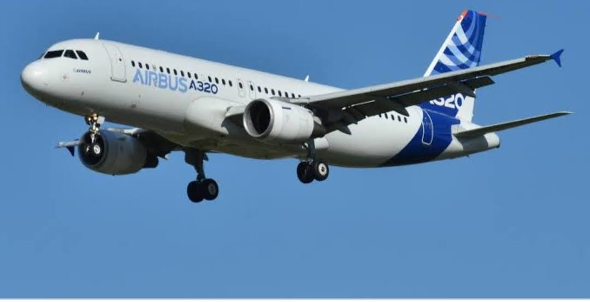
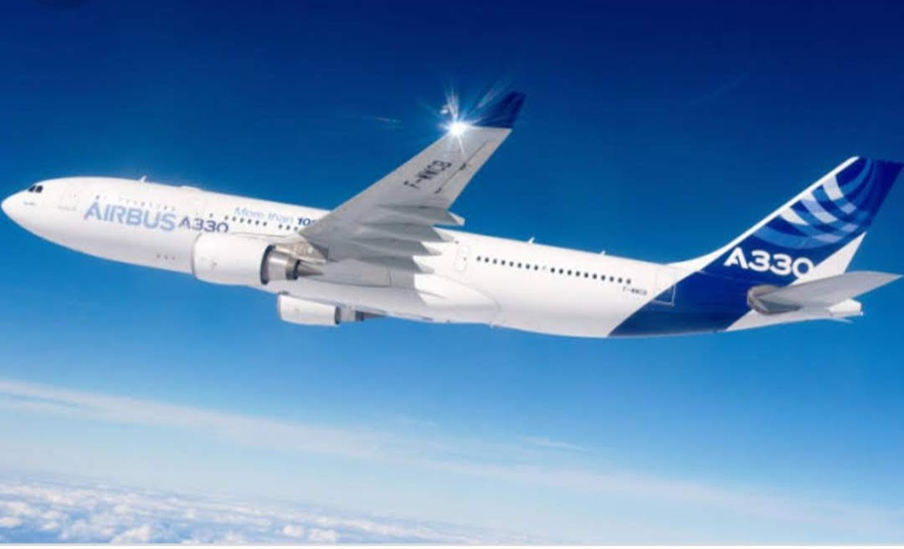
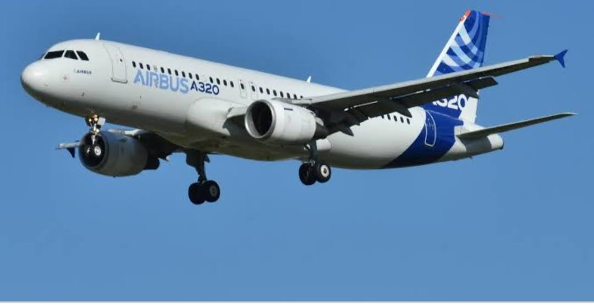
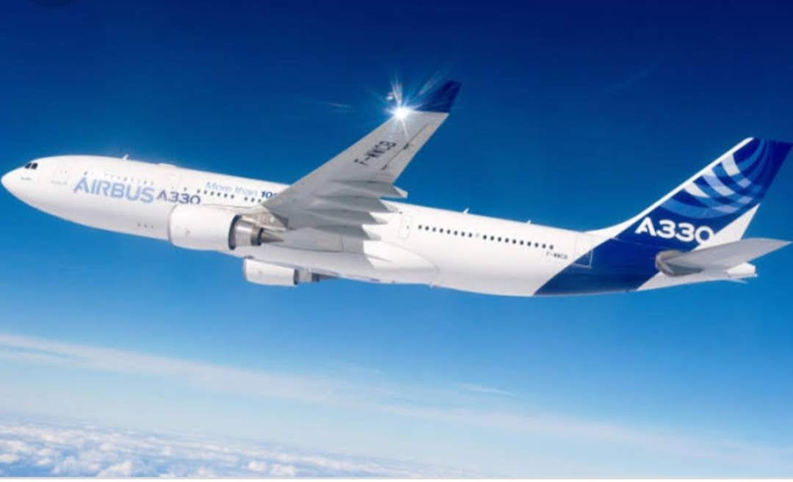

AIRBUS
|
||
|---|---|---|
|  |  |  |
| AIRBUS A320 | AIRBUS A330 | AIRBUS A320 NEO |
AIRBUS
|
||
|---|---|---|
|  |  | |
| AIRBUS A320 | AIRBUS A330 | AIRBUS A320 NEO |
| Brief Description | |
|---|---|
AIRBUS A320✈✈ |
The Airbus A320 family are narrow-body airliners designed and produced by Airbus. The A320 was launched in March 1984, first flew on 22 February 1987, and was introduced in April 1988 by Air France. The first member of the family was followed by the longer A321, the shorter A319, and the even shorter A318. |
AIRBUS A330✈✈ |
The Airbus A330 is a wide-body aircraft designed and produced by Airbus. Airbus conceived several derivatives of the A300, its first airliner in the mid-1970s. Then the company began development on the A330 twinjet in parallel with the A340 quadjet and launched both designs with their first orders in June 1987. |
AIRUS A320 NEO✈✈ |
The Airbus A320neo family is a development of the A320 family of narrow-body airliners produced by Airbus. The A320neo family is based on the previous A319, A320 and A321, which was renamed to A320ceo, for "current engine option" |
home page(welcome on board)